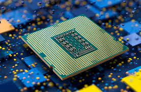

 Es un dispositivo que realiza las funciones de la CPU en un único circuito integrado. Se pone en marcha cuando inicias tu ordenador y se encarga de activar el sistema operativo y los programas correspondientes.